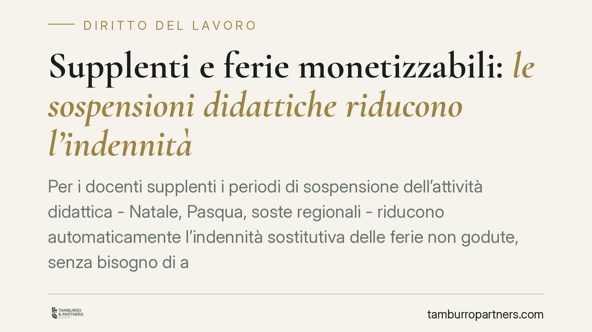

Supplenti e ferie monetizzabili: le sospensioni didattiche riducono l'indennità
Per i docenti supplenti i periodi di sospensione dell'attività didattica - Natale, Pasqua, soste regionali - riducono automaticamente l'indennità sostitutiva delle ferie non godute, senza bisogno di alcuna comunicazione del dirigente. Resta invece dovuto l'avviso formale per i giorni compresi tra la fine delle lezioni e la scadenza del contratto. È un chiarimento che incide direttamente sui conteggi di fine rapporto.

Il caso
La Corte di Cassazione, Sezione Lavoro, è tornata sul tema del compenso spettante ai docenti supplenti per le ferie non fruite al termine del contratto. La pronuncia riforma la decisione della Corte d'appello di Torino e distingue due situazioni che vanno trattate in modo diverso.
*Nota di cautela: gli estremi esatti della decisione (Cass., Sez. Lav., sent./ord. n. ___/____) vanno verificati in banca dati ufficiale prima di qualunque uso in sede difensiva o negoziale. Si invita a non citare il provvedimento senza aver confermato numero e anno.*
Il punto centrale è l'individuazione dei periodi in cui il docente è considerato in grado di godere delle ferie anche in assenza di un'assegnazione esplicita da parte della scuola.
Inquadramento normativo
La cornice resta quella del diritto alle ferie come diritto irrinunciabile. L'art. 36 della Costituzione garantisce al lavoratore ferie annuali retribuite e ne vieta la rinunciabilità. Sul piano eurounitario, l'art. 7 della direttiva 2003/88/CE impone un periodo minimo di ferie annuali e, come regola generale, ne vieta la sostituzione con un'indennità economica.
Esiste però un'eccezione precisa: la monetizzazione è ammessa quando il rapporto di lavoro cessa e le ferie maturate non sono state effettivamente godute. In questo caso l'indennità sostitutiva non è una scelta, ma la conseguenza dell'impossibilità oggettiva di fruire del riposo. La disciplina interna del pubblico impiego (L. 937/1977 e, per i vincoli di spesa, l'art. 1, comma 55, della L. 228/2012) si muove nella stessa logica: le ferie vanno fruite in natura, e solo la cessazione del rapporto giustifica il pagamento del controvalore.
Il doppio binario fissato dalla Cassazione
La decisione costruisce una distinzione netta tra due tipi di periodi.
Primo binario - le sospensioni didattiche. I periodi di interruzione dell'attività didattica (vacanze di Natale, di Pasqua, soste regionali) sono per loro natura momenti in cui il docente non svolge lezione ed è nelle condizioni di godere del riposo. Secondo la Corte, in questi intervalli le ferie si considerano fruibili in automatico: riducono quindi l'indennità sostitutiva spettante a fine contratto, e non è richiesta alcuna comunicazione o assegnazione formale da parte del dirigente scolastico.
Secondo binario - i giorni post-lezioni. Diverso è il periodo compreso tra la conclusione delle lezioni e la scadenza del contratto. Qui, perché le ferie siano considerate godute (e non monetizzabili), occorre un atto formale del dirigente che le assegni. In mancanza di quell'avviso, i giorni restano dovuti sotto forma di indennità.
La differenza non è formale. Nel primo caso il conteggio opera a monte e riduce l'importo; nel secondo l'onere di attivarsi grava sulla scuola, e la sua inerzia si traduce in un credito del docente.
Implicazioni pratiche
Per i docenti supplenti il messaggio è che non tutte le ferie non fruite danno diritto a un compenso: quelle che cadono in periodi di sospensione didattica si intendono assorbite. Occorre quindi leggere il prospetto di liquidazione verificando quali giorni siano stati decurtati e a quale titolo.
Per i dirigenti scolastici e per l'amministrazione, l'onere di comunicazione formale resta vivo e produce effetti economici concreti sui giorni successivi al termine delle lezioni. L'assenza di un atto di assegnazione, in quella finestra, non azzera il diritto del docente.
Resta sullo sfondo il tema della prescrizione: i crediti retributivi, inclusa l'indennità sostitutiva delle ferie, sono soggetti a prescrizione quinquennale. Far decorrere il tempo senza agire può comportare la perdita del diritto.
Cosa fare in concreto
- Recupera il prospetto di liquidazione di fine contratto e individua i giorni di ferie conteggiati e quelli decurtati.
- Distingui i periodi: verifica quali giorni cadono in sospensione didattica (assorbiti) e quali tra fine lezioni e scadenza del contratto (dovuti in assenza di atto formale).
- Richiedi copia dell'eventuale comunicazione dirigenziale di assegnazione delle ferie per il periodo post-lezioni.
- Controlla la prescrizione: trattandosi di crediti quinquennali, verifica che il termine non sia già maturato.
- È opportuna una verifica puntuale dei conteggi prima di qualunque iniziativa, anche alla luce degli estremi esatti della pronuncia da confermare.
Disclaimer
Contributo informativo a cura di Tamburro & Partners Avvocati - Avv. Giuseppe Tamburro. Non costituisce parere legale.
Ogni storia di lavoro ha i suoi tempi.
Se gestisci HR e vuoi un confronto su contenzioso, ispezioni o licenziamenti, scrivi allo studio. Ti rispondiamo entro un giorno lavorativo.